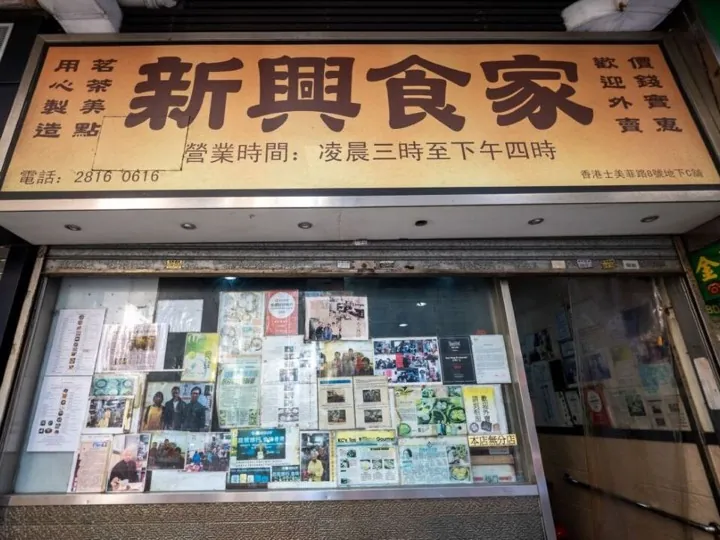

06:05抵达
A WEEKEND IN
香港HONG KONG
一盅早茶，一场现场。
和熟悉的人，走进香港。
10.31 — 11.012026 · 两天一夜
同行 建建 · 皇儿 · 彤彤
周六 — 周日 北京 / 深圳 → 香港
出发前，先确认这几件事三人入住 · 银行预约 · 浪茄接船0 / 10
我们按这些日期提前准备，商家和航司的办理截止时间另行核对。
勾选状态保存在当前浏览器。
THE ITINERARY当地时间 · UTC+8
DAY 01 / 10.31
上山看香港，入夜听现场。
早茶、开户后吃午饭，14:30 左右到酒店，再去太平山顶。17:00 左右下山，和彤彤汇合吃点东西，再去演唱会。
落地后时间待定
建建 · 皇儿新兴食家 · 坚尼地城
先吃早茶，再去银行。菜品和餐费待补充。

早茶后预约待确认
建建 · 皇儿
熙华大厦分行及卓越理财中心，皇儿陪同建建。
营业时间不等于开户受理截止时间；预约与材料待确认。
开户后再回酒店
一起吃午饭
办完卡先吃一顿午饭，再去九龙维景酒店。餐厅、菜品与费用待选。
14:30计划到店
入住后短途观景
建建 · 皇儿
酒店出发去中环，在国际金融中心二期一带乘 1 号小巴上山。到山顶广场周边观景拍照，时间充裕再沿卢吉道短走、原路折返。
目标 17:00 左右回到山下，提前看下山候车与实时导航，不走卢吉道完整环线。酒店在九龙，入住后还需过海；若入住或排队延误，就缩短山顶停留。
17:00左右 · 下山后
三人汇合，吃点小食
建建、皇儿下山后与彤彤汇合，先吃点东西。彤彤下午偏晚从深圳来，具体集合地点与小食店待定。
17:00 暂作回到山下的目标；按彤彤到港和实际下山时间联系汇合。
小食后预留安检时间
前往启德主场馆
吃完后皇儿与彤彤前往场馆；18:00 开门，20:15 开演。集合点确定后再核对交通，留出换乘、进场和找座位的时间。
建建参加三人汇合与小食，之后的晚间安排待定。
20:1518:00 开门
这一天的用餐
早茶 · 新兴食家；开户后建建、皇儿吃午饭；下山后三人汇合吃点小食。午饭、小食店与餐费待定。
DAY 02 / 11.01
把这一天，留给山海。
东坝看岩柱，浪茄湾看海，坐船回西贡吃海鲜。傍晚到旺角买蛋白粉，再去机场。
我们只走麦径第一段末段与第二段起点，看看海、拍拍照，不走完整一、二段，也不继续往西湾、咸田。东坝至浪茄有山径和上下坡，跟着彤彤当天的体力调整。
先订好 11 月 1 日浪茄湾 → 西贡的接送船，再下海滩。没有确认好船，就留在东坝。
破边洲：遥望，还是经典俯拍？
我们默认轻松走：在东坝地质步道沿海位置遥望破边洲，拍岩柱、堤坝与海景。这里能看远景，经典正面俯拍需要另走一段。
经典机位要另走破边洲观景台。官方整条破边洲段标注 2 公里、2 小时、3 星「费力」，我们先不排进主线，三人一起走、不分头。如果当天更想拍这里，就改走东坝 + 破边洲，取消浪茄徒步和船程，再坐车回西贡。
东坝地质步道官方全程为 2.8 公里、2 小时、1 星「易行」。我们只挑精华点走；这些数值不含浪茄湾或破边洲段，也不是我们当天的总里程。
去东坝的公共交通
酒店出发 → 港铁钻石山站 → 九巴 96R → 北潭涌 → 专线小巴 9A → 万宜水库东坝。酒店至钻石山按当天导航选港铁或巴士，出门时看好步行和换乘时间。
官方资料列明 96R、9A 周日可用；班次、首末班、车费及临时改道须出发前复核。预留候车时间，若晚到东坝就缩短景点停留，不追赶船。不要在上窑下车后徒步走公路去东坝。
浪茄回程船与不坐船的退路
我们准备预约沙滩快艇接送，还没确认有定期渡轮。Wakeluvi 有浪茄接送服务，但网站只提到夏季班次，11 月 1 日能否接送还要问船家。
预约时确认：3 人、浪茄湾返西贡、上船定位、目标 14:00 接走、费用与支付、天气停航退款及改期规则。船程、班次与票价当前均待确认；沙滩登船方式和上下船协助也要问清。
下山前未订到船、风浪不宜或体力不足：只游东坝，乘 9A 回北潭涌，再换 94 回西贡吃海鲜。若已经到浪茄才取消，须沿原路爬回东坝再乘车，需留足体力和时间，不能把它当作轻松退路。
上午出发前及东坝下山前再确认天气、船况与步道开放情况；有停航风险就采用东坝陆路方案。
22:25 航班和 12:00 退房截止已确定，其余是我们暂定的时间，车船班次和预约还要确认。
08:00计划准备
08:30计划出发
公共交通去东坝
前往钻石山站，乘 96R 到北潭涌，再换 9A 到东坝。车程与排队时间未核实，10:30 是规划目标。
10:30目标到达
12:00计划开始
14:00拟预约接走时间
上岸后争取 16:00 前结束
16:00计划离开西贡
西贡 → 旺角
吃完海鲜，带着随身背包前往旺角 BC Shop。具体换乘、车费及用时按当日导航确认；17:00 到店是规划目标，不是已核实的车程。
彤彤是否一起购物、何时离队及返程方式待确认。
17:00预留 1–2 小时
西贡海鲜后，到旺角旗舰店购物。暂排 17:00–18:30，共 1.5 小时；视到店时间留 1–2 小时，18:30 准备离店去机场。
买好后直接带去机场。品牌、规格、数量及费用待定；现场核对库存、保质期与优惠，并留意购买后背包总重量及已购行李额度。
18:30计划离店
购物结束，前往机场
带上买好的蛋白粉，从旺角前往机场。出店前查看实时交通，以 20:00–20:30 抵达为目标，具体线路、用时和车费待确认。
若车船、用餐或购物延误，按导航预计到达时间调整，必要时缩短购物或提前离店。
20:00至 20:30 抵达
22:25已确认航班起飞
这一天的用餐
早餐自理；午间自带简餐；下午在西贡吃海鲜，机场视饥饿程度再补充。餐厅、菜单与餐费均待确认。
STAY & RESERVATIONS
我们的订单与门票住一晚，留好每一张票。
10.31 周六 · 入住15:00 后
11.01 周日 · 退房12:00 前
豪华家庭房 · 2 张双人床 · 24 m²
有窗 · 禁烟 · 11 月 1 日不含早餐
订单标注可住 2 成人，三人入住规则待确认。
金额与取消政策
CNY 1,338.18 · 在线付；付款状态待核对。
2026 年 10 月 21 日 00:00 起取消，扣除全额房费。
订单链接待补充打开订单
往返航班
去程 · 10 月 31 日 周六UO261
02:35北京大兴
06:05香港国际 T1
10 月 31 日出发并抵达 · 建建、皇儿
订单链接待补充打开订单
返程 · 11 月 1 日 周日UO260
22:25香港国际 T2
01:40+1北京大兴
11 月 2 日周一抵达 · 彤彤返程待确认
订单链接待补充打开订单
香港快运 · 出发前再核对航司通知中的航站楼。
The Weeknd
AFTER HOURS TIL DAWN TOUR
开门18:00
开始20:15
启德主场馆 · 皇儿、彤彤
STANDARD · 第 1 张
- 入口 / 层
- H / 5
- 区
- 525 C
- 排 / 座
- KK / 758
STANDARD · 第 2 张
- 入口 / 层
- H / 5
- 区
- 525 C
- 排 / 座
- KK / 757
座位到时再分，建建晚间安排还没定。
两张实体原票记得带，检票凭证单独存好。
订单链接待补充打开订单
我们的航班、住宿和演唱会信息以订单与票面为准。出发前再核对营业时间、交通和场馆通知；还没确定的事项，先留着一起确认。
TRIP LEDGER
现场开销 · AA 计算记账，把每一笔都记下来。
每笔开销会按参与人平均分摊。记录只保存在当前浏览器，之后可以继续补记或删除。
港币记录HKD 0.00
人民币记录CNY 0.00
AA 结果
按付款人与参与人计算已记开销
0 笔还没有记录，先添加第一笔开销。
已确认订单金额（机票与住宿）仅供核对
这些订单金额暂未计入 AA，因为付款人和参与人还没有在记账中确认。
| 项目 | 金额 |
|---|---|
| 酒店 · 1 间 1 晚在线付；付款状态待核对 | CNY 1,338.18 |
| 去程机票 · UO2612026.10.31 北京 → 香港 · 02:35–06:05 | CNY 547.00 |
| 返程机票 · UO2602026.11.01 香港 → 北京 · 22:25–次日 01:40 | CNY 686.00 |
BEFORE WE GO
查看准备清单
出门前，再看一眼。
证件与随身物品
两天换洗衣物随身背包携带。核对有效证件及签注；备好手机网络、充电宝、薄外套和雨具。周日穿防滑运动鞋，带饮水、午间简餐、防晒和帽子，轻装出发。
天气与预警
出发前查看香港天文台最新天气，再决定衣物和雨具。关注台风、暴雨警告与航空公司、场馆的最新安排。
香港天文台支付与手机
准备适用的支付方式；早茶及市内交通的支付方式、费用待确认。
常用入口：常用地图 · 航空公司订单入口 · 香港天文台
订单与电子票
两张演唱会实体原票随身带好，航班、酒店订单和检票凭证也提前存到手机里。
网页上的订单链接保存在当前浏览器，不会自动同步到手机。
手机内留好原始订单和电子票；网页不替代登机或入场凭证。
落地后先去新兴食家，再去银行；交通耗时和车费待查。
所有时间按当地时间记录，北京、深圳与香港无时差。